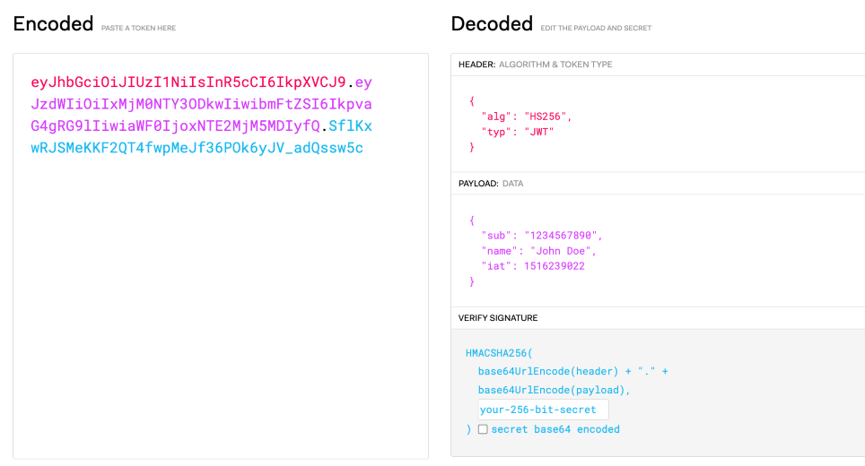

JWT
全名為 JSON Web Token (JWT)，是一種基於 JSON 的開放標準(RFC 7519)，主要用於服務間傳遞信息，並可透過 HMAC、RSA、ECDS 等演算法進行加密驗證。
結構
主要由這三個部分組成：
- Header
- Payload
- Signature
組合後的格式會像： <Header>.<Payload>.<Signature>

Header
Header 通常由兩部分組成， alg 爲 Signature 用的加密演算法，typ 基本上是 JWT：
{
"alg": "RS256",
"typ": "JWT"
}
Payload
Payload 內容通常就是 Claims 的部分，而 Claims 又分三個種類：
Registered claims： 儲存一些標準公認的訊息，像是：iss、sub、exp…，詳見 RFC-7591-section-4.1Public claims：可以向官方申請註冊的 claims ( IANA JSON Web Token )Private claims：自定義的資訊，但要避免與上述的 claims 衝突
Signature
主要就是由 Header(Base64) + Payload(Base64) + secret 組合加密出來的一串文字
實作
首先產生出一對 RSA key pair 並放置於 cert 資料夾
# 生成 private key
openssl genpkey -algorithm RSA -out cert/test -pkeyopt rsa_keygen_bits:4096
# 生成 public key
openssl rsa -pubout -in cert/test -out cert/test.pub
main.go
package main
import (
"fmt"
"os"
"time"
"test/token"
"github.com/golang-jwt/jwt/v4"
)
func main() {
privateKey, err := os.ReadFile("cert/test")
if err != nil {
fmt.Printf("Error reading private key file: %v\n", err)
return
}
publicKey, err := os.ReadFile("cert/test.pub")
if err != nil {
fmt.Printf("Error reading public key file: %v\n", err)
return
}
claims := jwt.MapClaims{
"name": "John Doe",
"role": "admin",
"exp": time.Now().Add(time.Hour * 24).Unix(),
}
jwtToken := token.NewJWT(privateKey, publicKey)
token, err := jwtToken.Generate(claims)
if err != nil {
fmt.Printf("Error generating JWT: %v\n", err)
return
}
fmt.Println("Token: ", token)
claims, err = jwtToken.Validate(token)
if err != nil {
fmt.Printf("Error validating JWT: %v\n", err)
return
}
fmt.Printf("Verified JWT claims: %v\n", claims)
}
jwt.go
package token
import (
"fmt"
"github.com/golang-jwt/jwt/v4"
)
type JWT struct {
privateKey []byte
publicKey []byte
}
func NewJWT(privateKey []byte, publicKey []byte) JWT {
return JWT{
privateKey: privateKey,
publicKey: publicKey,
}
}
func (j JWT) Generate(claims jwt.MapClaims) (string, error) {
key, err := jwt.ParseRSAPrivateKeyFromPEM(j.privateKey)
if err != nil {
return "", fmt.Errorf("error parsing private key: %v", err)
}
token, err := jwt.NewWithClaims(jwt.SigningMethodRS256, claims).SignedString(key)
if err != nil {
return "", fmt.Errorf("error signing token: %v", err)
}
return token, nil
}
func (j JWT) Validate(tokenString string) (jwt.MapClaims, error) {
key, err := jwt.ParseRSAPublicKeyFromPEM(j.publicKey)
if err != nil {
return nil, fmt.Errorf("error parsing public key: %v", err)
}
token, err := jwt.Parse(tokenString, func(token *jwt.Token) (interface{}, error) {
if _, ok := token.Method.(*jwt.SigningMethodRSA); !ok {
return nil, fmt.Errorf("unexpected signing method: %v", token.Header["alg"])
}
return key, nil
})
if err != nil {
return nil, fmt.Errorf("error parsing token: %v", err)
}
if claims, ok := token.Claims.(jwt.MapClaims); ok && token.Valid {
return claims, nil
} else {
return nil, fmt.Errorf("invalid token")
}
}
Repo：https://github.com/maxlin0523/jwt-demo
Reference
https://www.explainthis.io/zh-hant/swe/jwt
https://jwt.io/introduction
https://www.inanzzz.com/index.php/post/kdl9/creating-and-validating-a-jwt-rsa-token-in-golang